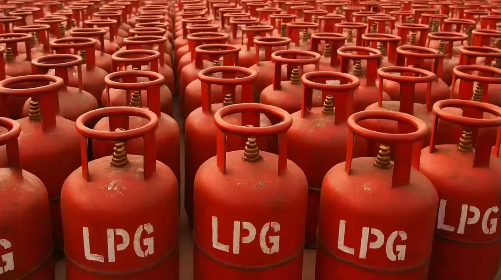

LPG (Liquefied Petroleum Gas) Overview
LPG (Liquefied Petroleum Gas) is a versatile energy product commonly traded as propane, butane, or a propane-butane blend. It is valued for its high energy content, clean-burning profile, and ability to be stored and transported efficiently under pressure as a liquid.
What It Is
LPG is produced during natural gas processing and crude oil refining. At normal temperatures it can be liquefied with moderate pressure, allowing bulk cargoes to move in pressurized cylinders, road tankers, ISO tanks, and specialized gas carriers. Commercial LPG specifications vary by market and season, with buyers often defining propane-butane ratios, vapor pressure, sulfur limits, moisture content, and odorization requirements according to the intended application and destination regulations.
Main Benefits
One of LPG’s key benefits is its flexibility across domestic, commercial, and industrial energy use. It offers strong calorific value, quick ignition, controllable combustion, and lower particulate emissions compared with many heavier fuels. Because LPG can be moved without pipeline infrastructure, it is especially useful for buyers serving remote communities, industrial sites, temporary projects, and markets that need reliable fuel availability in bulk or packaged form.
Typical Applications
LPG is widely used for cooking, heating, crop drying, hotels, restaurants, power backup, metal cutting, ceramics, glass, asphalt plants, and other industrial thermal processes. It is also used as an autogas fuel in selected markets and as a petrochemical feedstock. International buyers usually request clear product specifications, safe handling documentation, origin details, vessel or tank availability, and packaging or terminal options before confirming supply programs.
Why Choose It
LPG is a practical choice for importers and distributors who need a widely accepted, transportable fuel with consistent performance. Its broad demand base and established global logistics make it a strong fit for energy trading and industrial supply chains. While our core expertise is bitumen, we also source and supply related commodities like LPG (Liquefied Petroleum Gas) for verified buyers.
